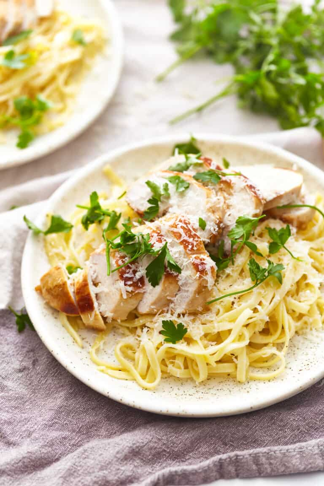

Chicken Alfredo

Description
This easy chicken alfredo is a quick and easy weeknight meal that is on the table in less than 30 minutes. Made with just a handful of ingredients.
Ingredients
- 4 cooked boneless, skinless chicken breasts sliced (or 4 cups cooked cubed chicken)
- Kosher salt to taste
12 ounces dry fettuccini or other long pasta (3/4 box)
2 cups reserved pasta cooking water divided
3/4 cup unsalted butter cubed (1½ sticks)
- 1 cup finely grated Parmesan cheese plus more for serving
- Freshly ground black pepper to taste
- Chopped fresh parsley or basil leaves; optional, for garnish
Steps
- In a large pot of boiling salted water, cook the pasta, stirring often, until al dente. Drain, reserving 2 cups of the pasta cooking water.
- Set a large skillet over medium-low heat and add 1-cup pasta water. Bring just to a low simmer, then whisk in 1 tablespoon of butter, one piece at a time, until melted.
- Gradually add the cheese, whisking constantly, being sure it is melted and incorporated thoroughly before adding each addition.
- Whisk in the additional 1-cup pasta water.
- Add the pasta and mix to coat until noodles are covered in sauce.
- (Note - if using cubed chicken, add it now and mix well.)
- Taste and season with kosher salt and freshly ground black pepper, if desired.
- Cook over low heat, about 3-5 minutes, just until the pasta absorbs most of the liquid. Stir often to avoid scorching the cheese-covered pasta.
- To serve, place ¼ of the pasta on a plate and add 1 sliced chicken breast.
- Top with a heaping helping of grated Parmesan cheese and garnish with chopped fresh parsley or basil leaves.